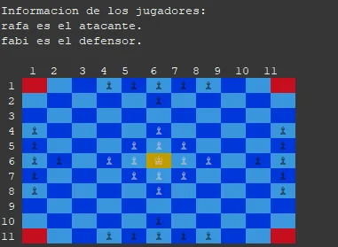

Hnefatafl
Implementación en Java puro (sin frameworks) del Hnefatafl, un juego de tablero vikingo asimétrico anterior al ajedrez: un bando defiende al rey en el centro de un tablero 11x11 y debe sacarlo a una esquina, mientras el otro bando, con más piezas pero más débiles, intenta atraparlo antes de que escape.
Se juega por consola, con soporte para partidas humano contra humano, humano contra máquina o máquina contra máquina.
Funcionalidades clave
- Tablero 11x11 con representación por consola y colores ANSI.
- Tres modos de juego: humano vs humano, humano vs máquina y máquina vs máquina.
- IA con búsqueda a 2 niveles: simula cada movimiento posible y la mejor respuesta del rival antes de elegir, valorando la posición según material restante y distancia del rey a una esquina.
- Reglas completas: movimiento ortogonal, captura por flanqueo y condición de victoria del rey al alcanzar una esquina.
- Tests unitarios con JUnit 5 (18 tests parametrizados) sobre movimientos, capturas y condiciones de victoria.
Tecnologías usadas
Lenguaje: Java
Testing: JUnit 5
Otros: Colores ANSI por consola, sin frameworks ni dependencias externas.
Demo en vídeo

Decisiones técnicas
IA por simulación, no por fuerza bruta total: en vez de explorar todo el árbol de jugadas, la máquina simula sus movimientos candidatos y, para cada uno, la mejor respuesta del rival usando la misma heurística - suficiente para jugar de forma razonable sin necesitar poda alfa-beta ni mayor profundidad.
Copia profunda del tablero para simulación segura: la IA nunca modifica el tablero real; cada candidato se evalúa sobre una copia independiente.
Legalidad silenciosa frente a legalidad explicada: un movimiento se puede comprobar de dos formas - en silencio, usada por la IA al explorar decenas de movimientos sin imprimir nada por consola, o con un mensaje explicativo, usada solo cuando un humano introduce una jugada inválida.
Jugador como abstracción única: la partida trata a los jugadores humanos y a la IA exactamente igual a través de un mismo método de decisión, sin ramas de código distintas según el tipo de jugador.